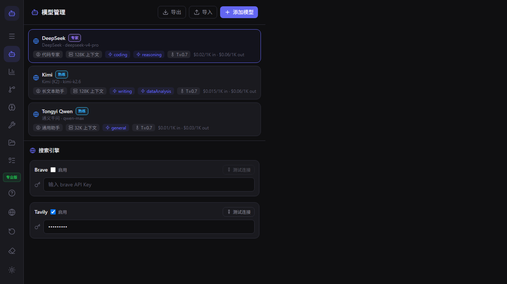
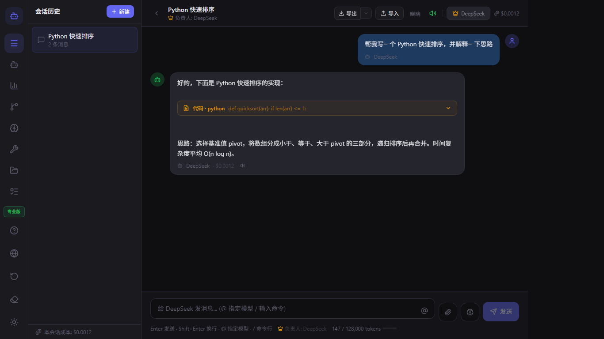
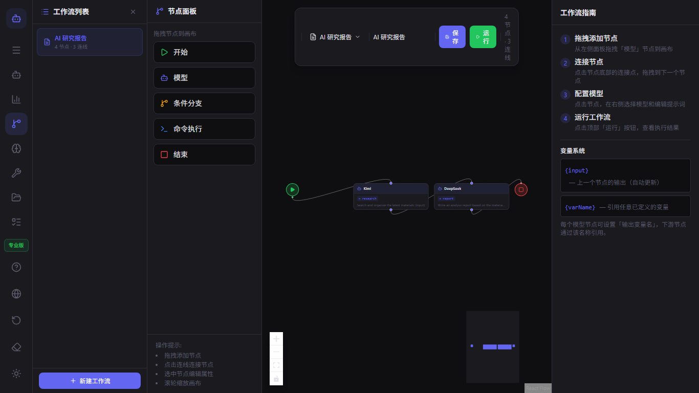
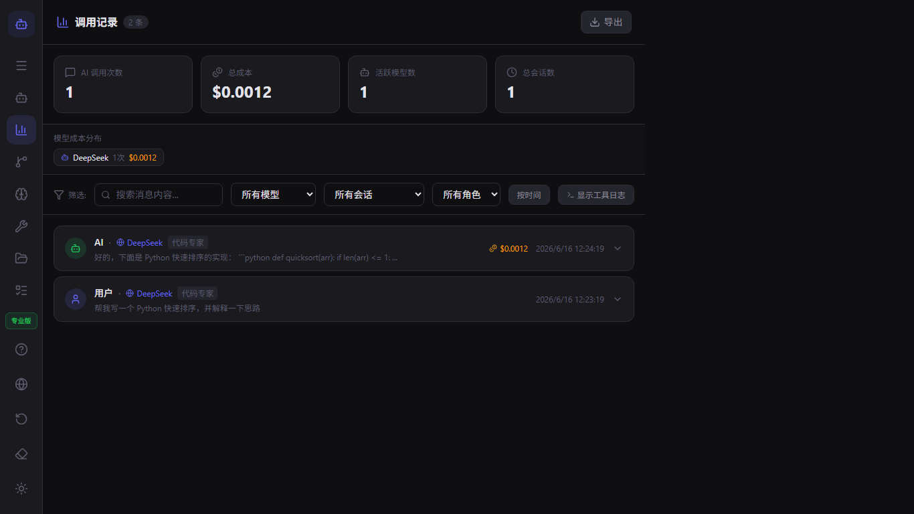

ModelFlow 用户指南
欢迎使用 ModelFlow。本指南涵盖从首次启动到高级多模型工作流的所有内容。
快速入门
- 从 Microsoft Store 下载 ModelFlow。
- 打开应用并完成引导设置。
- 在模型管理器中添加您的第一个模型。
- 开始聊天，输入
@model-name即可切换模型。
模型管理
使用模型管理器添加文本、图像、视频和音频模型。对于每个模型，您可以设置提供商、API 密钥、角色、上下文窗口和费用限制。

聊天与 @ 提及
输入 @ 后跟模型名称，即可将下一条回复路由到该模型。您可以在同一会话中串联多个模型。

工作流
打开工作流编辑器以构建可视化管道。将模型节点、条件节点和命令节点拖放到画布上，然后连接它们。

插件
ModelFlow 支持已验证的插件和社区插件。从插件管理器安装插件，或构建您自己的插件。

本地 CLI 与工具
模型可以运行本地命令、读取文件和列出目录。在聊天中输入 /tool 或在工作流中添加命令节点。

调用记录与费用
调用记录跟踪每一次 AI 调用、工具执行、令牌使用量和估算费用。导出日志以供分析。

设置与隐私
ModelFlow 采用本地优先架构。您的会话、模型配置和插件都存储在您的设备上。在设置中更改语言、工作区并导出数据。